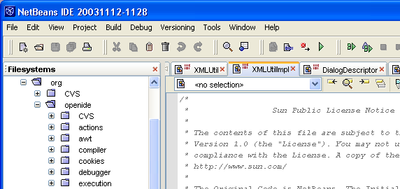
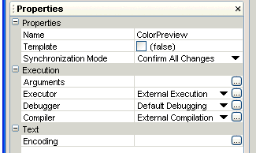

NetBeans 3.6 Release Plan
The NetBeans IDE 3.6 download is now available.
You can read more about the 3.6 release in the following documents:
The Java Studio Mobility modules pack for the NetBeans IDE is now available on the NetBeans
IDE 3.6 Auto Update Center in the J2ME Wireless folder. The documents listed below will help get your started:
See the NetBeans IDE 3.6 Support & Docs pages for guides and howtos.
The main charter for the NetBeans 3.6 release is primarily improving navigation within the IDE, the appearance, and some coding productivity improvements.
The release is driven partially by content and partially by timing, since the previous main planned release, 4.0,
containing the big new projects infrastructure
will not be available until Q3/2004 due to the complexity of the work. We believe, that for the IDE to stay competitive, the IDE needs to bring some other
improvements earlier, which is exactly the reason for introducing the NetBeans 3.6 release.
Here are screenshots of some of the cool features targeted for this release:
|  |
New window management
system in Windows XP look and feel
|
|  |
New property sheets
design
|
|
 |
|
Code folding in editor design |
The navigation theme focuses on streamlining the way the user transitions between various states of the IDE (reflecting different development stages)
as well as the transition from using one feature to another.
- New UI concepts: editor views/helper views, Views menu items are moved to Windows,...
- Window set: provide the appropriate windows following the user tasks automatically (replacement for workspaces)
- Windows layout customization using Drag'n'Drop
- Navigation: switching between editors through alphabetically ordered list of open editors
- New default layout and UI for debugger and form windows
- Navigation: switching between all windows through the stack of most recently used windows
- Navigation Improvements: Ability to maximize/restore the Editor window
- Navigation improvements: jump from editor to explorer
- The appearance theme covers the Look&Feel and design aspects of the user interface (i.e. colors, borders, fonts, etc.) as well as the low-level usability issues (consistency, adherence to standards, dialogs layout, basic
usability problems e.g. such as those listed in GUI Bloopers book).
- New visual design for better use of screen estate (scrolling tab handles)
- New visual design optimized for Java (aka Metal), Windows XP and Windows Classic Look&Feel
- Simplify initial and new user experience (defaults from operating system, search for installed JDKs, mount concept, explorer content, remove or make new Java class wizard optional, improve templates, streamlined behavior of output window...)
- Redesigned icons to match the new look & feel priorities
- Property Sheet: redesign the property sheet to make it look modern and be more usable.
Bundled Tomcat 5, J2EE 1.4 support and improvements in JSP Editor
- Tomcat 5 is bundled and supported as a default server, replacing the
support for Tomcat 4.x version. You can deploy two-tier J2EE 1.4 and 1.3
applications to Tomcat 5 and debug it within the IDE.
- No need to write complex tag handlers in java for simple tags in J2EE 1.4.
You can use JSP syntax to write simple tag file. NetBeans 3.6 helps you in
syntax coloring and code completion for these tag files.
- Opening/closing tag matching. Do you want to see where the closing tag for
table row is? Just put your cursor on <TR> and check colored </TR>
tag.
- Indentation in JSP works in a similar way as the indentation in your Java
code.
- Code completion of HTML tags does not force you to use upper case letters
anymore. Start typing in lower case and you get the tag in lower cases. Type
one letter as capital and the tag will change to capital letters.
- JSP Debugging is more reliable on Tomcat 5 than Tomcat 4. Tomcat 5
implements new standard (JSR 45) for mapping between JSP file and generated
servlet. The debugger benefits from that, so you can put your breakpoint
inside the scriplet and the IDE will stop there.
- JSP Expression Language would simplify your development, as you don't have
to write scriplets just to get the value from your business logic. Tomcat 5
implements expression language now and JSP Editor in NetBeans 3.6 provides
syntax coloring for these new constructs.
- JSP and HTML in XML syntax is becoming more important in new JSP 2.0
specification and JSP Editor is ready for that.
- Editor Productivity: Code Folding
- Other Editor Productivity/Usability Enhancements
- TaskList integration
- Integration of JavaHelp 2.0
- Architectural/Threading: Actions, Looks, Window system run in Event Queue
| NetBeans 3.6 Release Schedule |
| Milestone |
Date |
Information |
| Feature Freeze |
19 JAN 2004 |
Complete |
| Beta Release |
6 FEB 2004 |
Complete |
| Release Candidate 1 |
16 MAR 2004 |
Complete |
| NetBeans 3.6 release |
13 APR 2004 |
Now Available |